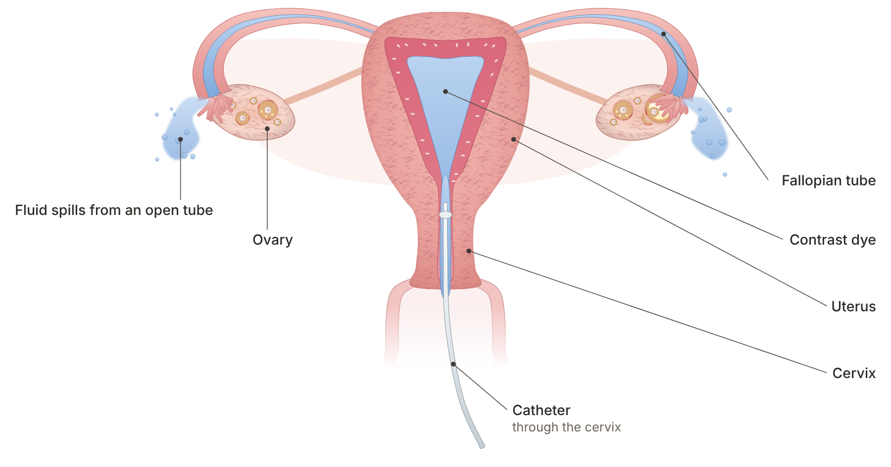

Quick answer: An HSG test (hysterosalpingogram) is a short X-ray exam that uses contrast dye to show whether your fallopian tubes are open and whether your uterus has a normal shape. HyCoSy checks the same tubes with ultrasound instead of X-ray. In a large 2022 trial, the two led to nearly the same birth rates, but the ultrasound test hurt less, so for many people under 40 it is a sensible first choice.
In this article
Both tests answer the same question: can an egg and sperm meet inside your tubes? The difference is how they look, how they feel, and what else they show. Here is the side-by-side view before the detail.
Feature | HSG test | HyCoSy / HyFoSy |
How it sees the tubes | X-ray with iodine contrast dye | Vaginal ultrasound with saline, air or foam |
Radiation | Very low dose | None |
Time on the table | Usually under 5 minutes | A short office visit |
Average pain score (0 to 10) | 5.4 | 3.1 |
Live birth within 12 months, 2022 trial | 47% | 46% |
Also checks | Uterine shape, tube detail | Uterus, ovaries and lining at the same visit |
Where it is done | Radiology suite | Fertility clinic exam room |
The short version: if your doctor needs fine X-ray detail of the tubes, choose the HSG. If you want a gentler test that also checks your ovaries and uterus, HyCoSy is a strong first step. Aurea offers SIS/HyCoSy for $350.
So, what is HSG test exactly? It is an X-ray movie of your uterus and tubes. A doctor places a thin, soft tube (catheter) through your cervix, fills the uterus with contrast dye and watches on a screen as the dye flows up each tube and spills out of the far end near the ovary. Spill on both sides means both tubes are open.
According to the ASRM patient fact sheet, the test is done after your period ends and before you ovulate, so there is no chance of an early pregnancy. It usually takes less than 5 minutes, and radiation exposure is very low, less than a kidney or bowel X-ray.
The HSG also outlines the inside of the uterus. The ASRM committee opinion on fertility evaluation notes that it shows the size and shape of the cavity and can reveal some developmental differences.
Most people feel cramping. The ASRM fact sheet describes mild or moderate cramping for about 5 to 10 minutes, eased by the same medicine you take for period cramps. Experiences vary a lot: one person on a pregnancy forum called it "a little bit painful, but mostly very uncomfortable," while others describe stronger pain, often when a tube is blocked and the dye builds up pressure.
Worry before the test is common. One patient wrote that "the anticipation and anxiety of just having the test was overwhelming." A little preparation takes much of that away.
Take an anti-inflammatory pain reliever, such as ibuprofen, about an hour before, if your doctor agrees.
Tell the team about any iodine or contrast allergy, recent pelvic infection or chance of pregnancy.
Ask whether you need antibiotics, which some clinics give to lower the small risk of infection.
Plan a quiet rest of the day. Light spotting and some sticky discharge from the dye are normal for a day or two.
The ASRM fact sheet notes that serious problems, most often a pelvic infection, occur less than 1% of the time. Call your clinic if you develop fever, heavy bleeding or pain that keeps getting worse.
HyCoSy (hysterosalpingo-contrast sonography) uses a vaginal ultrasound probe instead of an X-ray machine. A small catheter places sterile saline mixed with tiny air bubbles, or a gel foam in the version called HyFoSy, into the uterus. The bright bubbles show up on ultrasound as they travel through each tube and spill out.
Because it is an ultrasound, the same visit can also look at your ovaries, count antral follicles and check the lining. That makes it a natural fit for a one-stop fertility workup. It uses no radiation and no iodine dye, which matters if you have an iodine allergy.
The trade-off is that ultrasound is more operator-dependent, and sometimes a tube is hard to see clearly. In the 2022 trial below, HyFoSy was inconclusive in 9.5% of women versus 2.9% for HSG, so a small number of people may still need a second test.
The research says the two tests are close on accuracy and on pregnancy outcomes, and the ultrasound test is gentler. Here are the key studies.
Accuracy. A 2014 meta-analysis in Human Reproduction pooled 28 studies of 1,551 women. In the 9 studies that compared both tests against laparoscopy, the ultrasound method found 95% of blocked tubes (sensitivity) and HSG found 94%.
Pregnancy outcomes. A 2022 randomized trial in Human Reproduction gave 1,026 women both tests. The results agreed in 73% of women, and the estimated live birth rate within 12 months was 46% with HyFoSy-guided care and 47% with HSG-guided care.
Pain. In that same trial, women rated HyFoSy at 3.1 and HSG at 5.4 on a 0 to 10 pain scale.
The contrast effect. A 2017 trial in the New England Journal of Medicine of 1,119 women found that flushing the tubes with oil-based contrast during the HSG led to more ongoing pregnancies in the following months: 39.7% versus 29.1% with water-based contrast.
Study | Women | HSG result | Ultrasound or comparison result |
Accuracy vs. laparoscopy (2014) | 582 in head-to-head studies | Sensitivity 94%, specificity 92% | Sensitivity 95%, specificity 93% |
Live birth within 12 months (2022) | 1,026 | 47% | 46% (HyFoSy) |
Pain score, 0 to 10 (2022) | 1,026 | 5.4 | 3.1 (HyFoSy) |
Ongoing pregnancy after tube flushing (2017) | 1,119 | 39.7% with oil-based contrast | 29.1% with water-based contrast |

One caution applies to both tests. A 2011 analysis of 4,521 women in Human Reproduction Update found HSG picked up 53% of any tubal problem and correctly called 87% of healthy tubes normal. In plain words: no tube test is perfect, so your result is read together with your history, and an abnormal result deserves a confirming look before any surgery.
Choose based on what you need the test to answer, not on which one sounds more familiar.
your doctor needs detailed X-ray images of the tube lining or a suspected blockage near the uterus;
you want the possible fertility boost of an oil-based contrast flush;
you have had pelvic surgery, a past ectopic pregnancy or a known tube problem and need the clearest picture.
you want the lower-pain option and no radiation;
you have an iodine allergy;
you would like your ovaries, follicle count and lining checked at the same visit;
you are under 40, early in your workup and want an answer quickly.
If you are over 40 or have low ovarian reserve, our sister clinic Rejuvenating Fertility Center specializes in those cases.
A "blocked" result is not always a blocked tube. The muscle where the tube meets the uterus can tighten during the test, so dye stops and the tube looks closed even when it is open. That is why the ASRM committee opinion says that results suggesting both tubes are blocked near the uterus need further evaluation to rule out this artifact before any treatment decision.
Here is how a result usually turns into a plan.
Both tubes open: tubes are not the barrier. Many couples move to timed intercourse or IUI, depending on age, egg reserve and sperm results.
One tube open, one blocked: pregnancy is still possible through the open side. One forum member wrote, with relief, that her test "thankfully showed that my remaining right tube was clear." IUI on the open side is a common next step.
Both tubes appear blocked near the uterus: repeat or confirm with a second test, then consider tubal recanalization, a procedure that reopens the tube from the inside.
Fluid-filled blocked tube (hydrosalpinx) or both tubes truly blocked: IVF bypasses the tubes completely, and a hydrosalpinx is often treated before embryo transfer.
Aurea's page on blocked fallopian tubes explains each treatment in more detail.
The HSG test price depends on where it is done, because it is usually billed through a hospital or imaging center, and on your insurance. HyCoSy is done in the fertility clinic, which tends to keep the cost simpler. In the Dutch trial, the procedure itself cost €136 for HyFoSy and €280 for HSG, according to a 2024 economic evaluation in Human Reproduction. Prices in the United States are different, so always ask for a written quote.
At Aurea, current prices from our pricing page, as of 2026, include:
SIS/HyCoSy: $350
Physician consult: $350, or a free 20-minute nurse call
Hysteroscopy: $3,400
Tubal recanalization: $3,800
IUI: $800
Prices can change, and your consult confirms the plan.
Day 1 of your period: call or text to book. Aurea offers same-week new-patient appointments.
After bleeding stops, before ovulation: the tube test, often alongside your baseline ultrasound.
Same day: your doctor reviews the images with you.
Next cycle: start the plan that fits your result, from timed intercourse or IUI to IVF.
Questions to ask before you book:
Will you use an X-ray or ultrasound test, and why for me?
If you do an HSG, is the contrast oil-based or water-based?
Should I take a pain reliever beforehand, and do I need antibiotics?
If a tube looks blocked, will you repeat or confirm it before recommending surgery or IVF?
If you are earlier in the process, our guide to the fertility treatment pathway shows where the tube test fits. Pair it with your AMH level and a semen analysis for the full picture. If you live outside New York, outside monitoring lets you do scans close to home.
An HSG test checks whether your fallopian tubes are open and shows the shape of the inside of your uterus. It is one of the standard tests in a fertility workup, usually done alongside blood tests and a semen analysis.
Most people feel period-like cramping for about 5 to 10 minutes. Taking an anti-inflammatory pain reliever beforehand helps. In a 2022 trial, the average pain score was 5.4 out of 10 for HSG and 3.1 for the ultrasound version, HyCoSy.
Yes, and some people do. A large trial found more ongoing pregnancies after tube flushing with oil-based contrast than with water-based contrast. One forum member wrote, "the month after the HSG, I got pregnant!" Ask your doctor whether you can try that same cycle.
Research says they perform similarly. A 2014 meta-analysis found the ultrasound method detected 95% of blocked tubes compared with 94% for HSG, measured against laparoscopy. Ultrasound can occasionally be inconclusive, in which case a second test may be needed.
After your period has stopped and before you ovulate, usually in the first half of the cycle. This timing avoids testing during an early pregnancy and gives the clearest view of the uterus.
Aurea performs the ultrasound version, SIS/HyCoSy, for $350. If your doctor recommends an X-ray HSG, it is done at an imaging center, and that facility sets its own price.
Both the HSG test and HyCoSy answer the same question about your tubes, and both lead to similar chances of a baby. For many people under 40, the gentler ultrasound test is a good first step, with HSG kept for when more X-ray detail is needed. Either way, knowing your tubes are open, or knowing exactly what to fix, saves months of guessing.
If you were "scared of the procedure," as one patient put it, you are not alone, and a calm explanation beforehand makes a real difference. At Aurea Fertility Center, our team can walk you through the test and your results the same day. Book a free 20-minute nurse call or a $350 physician consult and get your workup started this cycle.